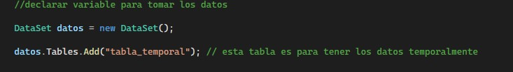
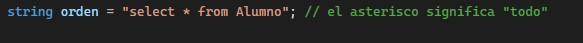
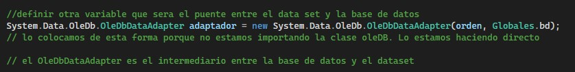
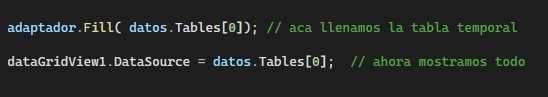

guia de C# con Access
Para empezar a hacer una funcion que permita extraer una la informacion de la base de datos en una tabla primero definiremos dos nuevas variables donde estaran ubicados los datos.
el segundo paso sera declarar otra variable que contenga la cadena de orden para la base de datos la cual sera "select * from (nombre de la tabla)";
y definiremos una ultima variable que sera el puente entre el data set y la base de datos
para terminar emplearenos las siguientes doslineas de codigo para llenar y mostrar la tabla que necesitamos
